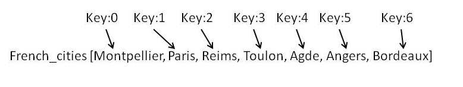

I will start by a bright statement! Array and hash are similar but different. Wahoo now it is clear...The main similarities are that both are used to store data. They also both use keys to store the data. The difference is how they store the data. Array are organized, the first data point in the array has for key '0', then the second data point has for key:'1'. So you do not need to enter the key. The key is automatically set.
Let's look at an example:
Say we want the 5th data point in array french_cities:

So we will do Puts french_cities [4] => Agde (Agde is a small town in South of France if you were wondering)
On the other side, in hash keys are not set. You have to assign them.
To take the same example of french_cities you could do something like that:
French_cities { capital -> Paris, cathedral-> Reims, wine -> Bordeaux, pretty ->Angers, vacation -> Agde, rugby -> Toulon, nice -> Montpellier}
So if you want to see a nice cathedral you can search in your hash with the key cathedral:
french_cities {cathedral} => Reims (Reims has a beautiful cathedral probably one of the most beautiful in France).
Array and hash can also be combine. They are very useful tools to save data.